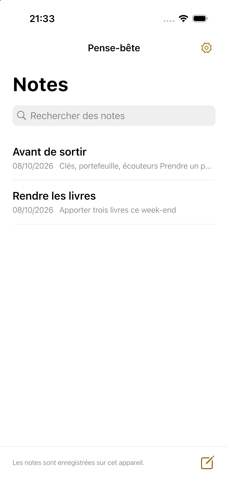

Vos notes importantes sur l’écran d’accueil.
Un bloc-notes simple et rapide. Affichez seulement les notes utiles sur l’accueil, en texte lisible.
Voir le mode d’emploiiPhone / Android · Bientôt disponible

Écrivez. Choisissez. Gardez en vue.
Ouvrez une note et écrivez. Les modifications sont enregistrées automatiquement.
Touchez Ajouter à l’accueil dans une note, puis suivez les instructions de votre appareil pour ajouter le widget.
Touchez la note pour ouvrir son éditeur.
Simple à écrire. Facile à lire.
Trois tailles de texte
Normale, grande et très grande. Touchez une longue note pour la lire entièrement.
Vos notes à portée de main
Sans compte. Les notes restent sur l’appareil et peuvent être restaurées pendant 30 jours après suppression.
Dix langues
Japonais, anglais, coréen, chinois simplifié et traditionnel, espagnol, français, allemand, italien et portugais du Brésil.
Confidentialité
Texte, dates et réglages d’affichage, de suppression et de langue restent sur l’appareil. Nous ne transmettons pas les notes aux serveurs ou au SDK publicitaire et n’utilisons pas de SDK d’analyse.
ConfidentialitéPublicité
L’application gratuite prévoit une bannière sous la liste. Aucune publicité dans l’éditeur ni les widgets. Les notes fonctionnent même si la publicité ne se charge pas.